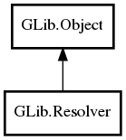

Resolver
Object Hierarchy:

Description:
public class Resolver :
Object
Namespace: GLib
Package: gio-2.0
Content:
Static methods:
Creation methods:
Methods:
- public virtual string lookup_by_address (InetAddress address, Cancellable? cancellable = null) throws Error
- public virtual async string lookup_by_address_async (InetAddress address, Cancellable? cancellable = null) throws Error
- public virtual List<InetAddress> lookup_by_name (string hostname, Cancellable? cancellable = null) throws Error
- public virtual async List<InetAddress> lookup_by_name_async (string hostname, Cancellable? cancellable = null) throws Error
- public virtual List<Variant> lookup_records (string rrname, ResolverRecordType record_type, Cancellable? cancellable = null) throws Error
- public virtual async List<Variant> lookup_records_async (string rrname, ResolverRecordType record_type, Cancellable? cancellable = null) throws Error
- public List<SrvTarget> lookup_service (string service, string protocol, string domain, Cancellable? cancellable = null) throws Error
- public async List<SrvTarget> lookup_service_async (string service, string protocol, string domain, Cancellable? cancellable = null) throws Error
- public virtual List<SrvTarget> lookup_service_fn (string rrname, Cancellable? cancellable = null) throws Error
- public virtual async List<SrvTarget> lookup_service_fn_async (string rrname, Cancellable? cancellable = null)
- public void set_default ()
Signals:
- public virtual signal void reload ()